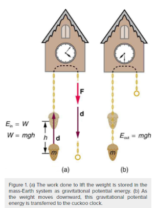
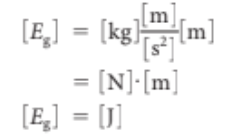
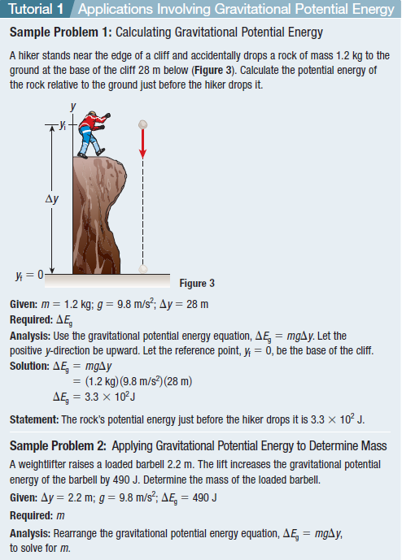
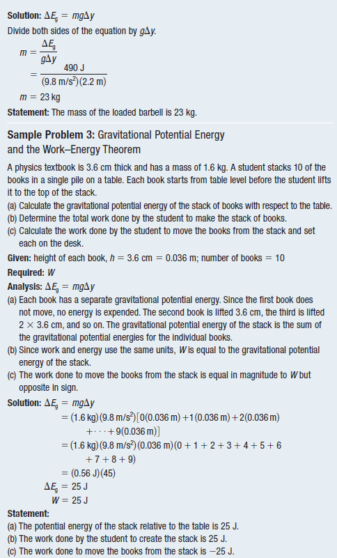

Gravitational Potential Energy
Potential Energy
Potential energy is the stored energy an object has that can be converted into another form of energy.

Kinetic energy and potential energy have a close relationship, and one form can transform into the other as work is done on or by an object.


|
The sum of the kinetic energy and potential energy of an object is called the mechanical energy of the object. |

Gravitational Potential Energy

Gravitational potential energy (Eg) is a stored energy an object has because of its position and the applied gravitational force.
|
Let us calculate the work done in lifting an object of mass m through a height h, such as in Figure 1. If the object is lifted straight up at constant speed, then the force needed to lift it is equal to its weight mg. The work done on the mass is then W = Fd = mgh.  |
|
Gravitational potential energy and kinetic energy are different manifestations of the same quantity—energy. They both have the same units—joules—and both are scalar quantities. In the equations below, you can see how to calculate the units of gravitational potential energy, 🔺Eg = mg🔺y. The units of m are kilograms. The unit of g is metres per second squared. The units of y are metres. Putting these facts together gives:  |
Watch this video that shows how gravitational potential energy is calculated.
Gravitational Potential Energy


PracticeA grey squirrel drops a 0.02 kg walnut from a branch that is 8.0 m high. Determine the change in potential energy of the walnut between the branch and the ground. |